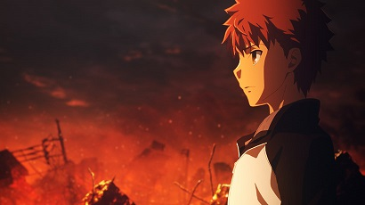
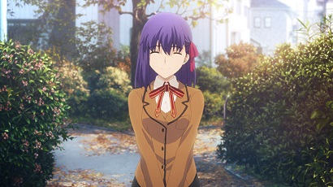
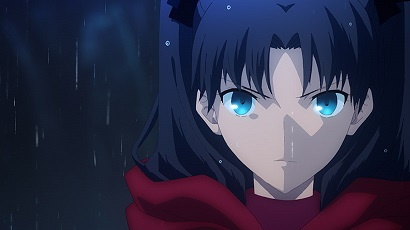
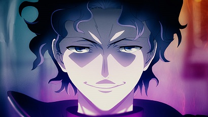
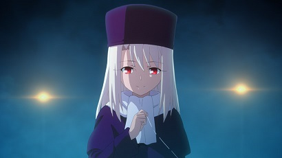
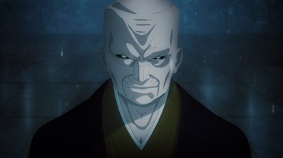

衛宮士郎
えみやしろう
CV：杉山紀彰
魔術師見習いの少年。
養父・衛宮切嗣の影響で正義の味方を目指す。
偶然セイバーを召喚したことで、「聖杯戦争」に巻き込まれる。

間桐 桜
まとうさくら
CV：下屋則子
衛宮士郎に憧れる少女。
毎日衛宮邸に通っては、家事を担当している。

遠坂 凛
とおさかりん
CV：植田佳奈
衛宮士郎の同級生。
冬木の管理者・遠坂の六代目継承者。
アーチャーを召喚し、必勝を期して「聖杯戦争」に臨む。

間桐慎二
まとうしんじ
CV：神谷浩史
間桐家の長男。
衛宮士郎の同級生であり桜の兄。
弓道部の副部長。屈折した想いを抱き「聖杯戦争」に参戦する。

イリヤスフィール・フォン・アインツベルン
CV：門脇舞以
「聖杯戦争」の御三家のひとつ、アインツベルンの名を持つ少女。
バーサーカーと契約を交わし、戦いに臨む。

間桐臓硯
まとうぞうけん
CV：津嘉山正種
「聖杯戦争」における御三家のひとつ、間桐家の当主。慎二と桜の祖父。